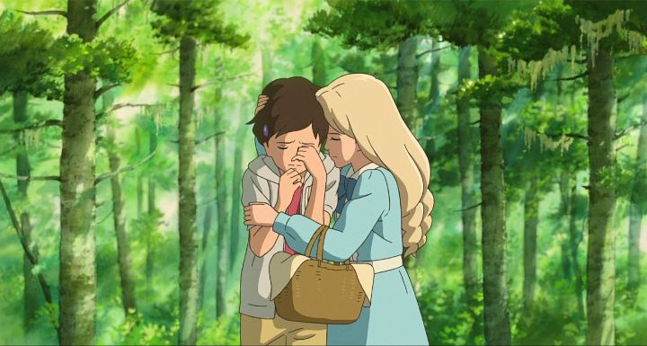

How do you feel when an era has finished, when you realize that something you loved, not a family or a friend, but a legacy, had come to an end? What do you remember about it? The best? The worst? The first? Or the most recent?That's what many fans felt when they lived through the inevitable end of Studio Ghibli in 2014. After decades of hard work, the studio was an international phenomenon. It's leading directors were aging: Hayao Miyazaki had announced his retirement yet again, and Isao Takahata seemed unlikely to live long enough to finish anything else. They ended their careers with a bang, a double-release of "The Wind Rises" and "The Tale of Princess Kaguya" in the same year, both important and fitting farewells to their fans. For many who got to eagerly pay attention as these films were produced, these are among the most memorable parts of the studio's catelog. To this day, many fans will remember "My Neighbor Totoro" or "Kiki's Delivery Service" for their sweet mascot characters and encouraging attitude. Perhaps "Castle in the Sky" and "Princess Mononoke" for modern classic adventures. Or "Spirited Away" and "Howl's Moving Castle" for its exotic and other-worldly fantasy. Yes, there is much more to Studio Ghibli than that, but these are likely to remain the most fresh in people's hearts.But it is easy to forget the true last Studio Ghibli film: "When Marnie Was There." Unlike the important "Rises" and "Kaguya," this was a small and unassuming story of a young girl fraught with insecurity. In many ways, this is a much more fitting way to bid Ghibli's fans goodbye. Uncertain for what a future might be like with them, Ghibli reminds us that things will be ok, life will move on, and we'll find new friends as time passes.I still remember getting to see it on the big screen, despite having missed the last few Ghibli theatrical films for other matters. I had traveled from Windsor, Ontario to Toronto, the exact reason for which I do not recall... I was headed to another city for a conference on comics, animation or video games, I think, but took advantage of Toronto as a stop-over city to stay the night, specifically to catch "When Marnie Was There" at the TIFF Bell Lightbox theater. It happened to be playing there that week, one of the only locations in Canada, and Canada's VIA railroad system was becoming a favorite of mine to be able to take these little detours. The TIFF theater is home to the annual Toronto International Film Festival, but throughout the year shows both blockbuster and indie films, as well as hosting small museum events and summer camp activities. It's located in the heart of downtown Toronto, standing tall, modern and clean, but has a certain coziness to it that makes it remain nostalgic and intimate. The ticket office was even kind enough to point out the free mini-posters of the film I was seeing, when I walked in from the summer rain on a quiet afternoon. Only a few dozen were in the theater with me when the film started, enough to offer plenty of space between everyone. And when the film had ended... I cried a little. Not just because of the film's story, but because I knew this was the end. There would be no more Ghibli films after this. And I had a chance to see it in the best setting possible: a quiet and atmospheric one, surrounded by strangers with the same thoughts of melancholy. And who would direct this final film? Not Miyazaki or Takahata, but Hiromasa Yonebayashi, who had directed only one film prior, also at Ghibli. He might have been the sole reason for Ghibli's talented animators to stay together, but they would all later leave to make their own path: without their old mentors, it simply wouldn't be the same. Yonebayashi's style isn't as crowd-pleasing or as artistically motivated as his peers, but is more subtle and in service to the story. Not a great director, per say, but here, his style is absolutely fitting.  The story for "When Marnie Was There" is based on a British novel, not unlike some of the studo's more recent works. Anna is a young pre-teen filled with self-doubt. Unsocial, and often sickly with medical bills, she views herself only as a burden to her foster parents, whom she has convinced herself only raise her to collect government tax benefits, despite her parents' best efforts to explain otherwise. It is decided that Anna would be better suited to spend the summer in the countryside with her distant relatives, to feel the fresh air and a new sense of place. Anna's personal emotions are not unusual and are easy to relate with, even if they manifest is less than subtle ways in the movie... even then, I still recall friends who acted very much the same, either as a sign of depression or presumed mental instability.While hanging around the tides of a nearby marsh, Anna stumbles upon a new character named Marnie, a blonde girl her age, living in a seemingly abandoned house on the other side of the water. After a chance encounter, they confide in each other and become good friends. This occurs after nightfall; when day breaks, the house seems abandoned again. Is Marnie real? Is she a ghost, or an imaginary friend, or a real girl in hiding? Anna doesn't seem particularly concerned, but the mystery becomes more palpable when others notice, and as we learn more about Marnie and her family. Ultimately, there is a conclusion to the mystery, and a surprsingly satisfying one at that. But it isn't all that important. Instead, this is a film about Anna finally opening up, still struggling on occasion to make real friends, but ultimately finding the courage to better herself and see a new outlook. Yes, Japanese anime has a lot of these types of movies, but the mystery around it is played as just the right complement.It's rare to say this, but I found the English dub to actually be more appropriate than the original Japanese (the orignal European setting was changed to Japan, but otherwise the styles and names of characters feel very English). It is a strong dub that just feels right, only somewhat struggling due to the script trying to depict Anna's internal struggles. Even the music prominently uses an English track as its ending theme. And did I mention the visuals? While not visually imaginative, the detail and clean color work makes this feel arguably like one of the best examples of animation Ghibli had made, or at the very least, it exceeds standards. Likely, this is just an example of the animators mastering their craft, and knowing to make the most of it while they still can."When Marnie Was There" is a quiet and moving film, and emotional ties to it make me remember it all the fonder. After the symphony of "The Wind Rises" and "Princess Kaguya" leaves a resounding fnale to ensure their place in history, "Marnie" acts as the quiet final song, a lone woman with a guitar. This is the last show. This is the last song. The cast gave you a grand ending. "Marnie" is that last wave before leaving the stage, long after the crowds have left, finally saying "goodbye."
- "Ani" More reviews can be found at : https://2danicritic.github.io/ Previous review: review_When_Adam_Changes Next review: review_When_The_Wind_Blows